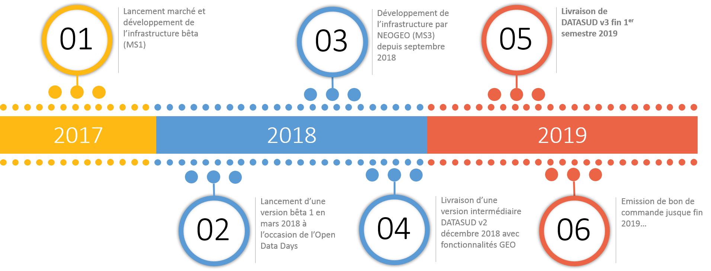

DATASUD
L'infrastructure régionale de données ouvertes et géographiques

Proposé par le CRIGE Provence-Alpes-Côte d'Azur
Le projet
DATASUD est un projet piloté par le CRIGE Provence-Alpes-Côte d’Azur et la Région SUD Provence Alpes-Côte d’Azur, avec la participation financière de l’État et du Conseil départemental des Hautes-Alpes.
Lancé fin 2016, le projet mutualise une infrastructure de données à l’échelle régionale, accessibles à travers un catalogue de données à l'échelon régional.
Le catalogue de données diffuse des données ouvertes, géographiques et intelligentes au service du développement des territoires et de l’innovation numérique.
75 organisations diffusent déjà des données sur DATASUD. Des données supplémentaires vont être intégrées au fil de l'eau en 2019.
Partenariat CRIGE Provence-Alpes-Côte d'Azur et Région SUD
| Groupement de commande | CRIGE/Région SUD |
| Forme du Marché | Accord-cadre monoattributaire |
| Financement | 50% CRIGE, 50% Région SUD |
| Durée | Fin 2016 à fin 2019 |
Prestataire retenu :
Avec des sous-traitants :
Le code est entièrement open-source !
Roadmap
À qui s'adresse DATASUD ?
- Aux producteurs de données en région, pour référencer et diffuser leur patrimoine de données
- Aux réutilisateurs de données pour chercher des données, et analyser, développer, protéger le territoire
- Aux entreprises et start-up, à la recherche de données
- Aux citoyens et acteurs de la transparence de l'action publique
Pourquoi publier sur DATASUD ?
- Participer à une initiative régionale, point d'entrée unique de la donnée en région
- Mutualiser une infrastructure pour diminuer les coûts de diffusion des données
- Publier des données dans des formats ouverts et réutilisables
- Souscrire aux exigences règlementaires (Loi République Numérique, INSPIRE)
- Faire remonter les données au niveau national : data.gouv.fr, geo.data.gouv.fr, geocatalogue.fr,...
Que publier sur DATASUD ?
- Les données produites par votre organisation et diffusables (90% des données d'administration publique)
- Des données ouvertes (Open Data), mais pas seulement(données sensibles, données d'espèces protégées,...)
- Des données aux formats ouverts : CSV, JSON, GEOJSON, Shapefile, JPEG2000, GeoTIFF
Qui publie ou publiera sur DATASUD ?
Retrouvez les organisations qui publient ici :

Et demain, par moissonnage, la DREAL PACA, la Métropole AMP, le SMAVD...et les partenaires de CitizenCLIMET ???
Les grandes fonctionnalités
- Un catalogue unique pour toutes les données tabulaires ou géographiques
- Un seul guichet de publication de données simplifiée
- Des outils métier pour les utilisateurs plus experts :
- Publication de métadonnées INSPIRE
- Publication de flux WMS et WFS
- Extracteur de données raster et vecteur
- Visualiseurs métier
- Catalogue en marque blanche intégrable sur tout site internet
Démonstration
Pour les partenaires du CRIGE
Services à valeur ajoutée supplémentaire CRIGE sur l'infrastructure :
- Support de premier niveau auprès des utilisateurs : hotline, support technique, assistance
- Atelier de publication de données, accompagnement à l'inventaire du patrimoine
- Extracteur de données géographiques raster (à venir) et vecteur
- Accès aux données sensibles sous convention régionale
- Gestionnaire de styles pour l'affichage des flux WMS
- Applications webmapping et utilitaire de publication de cartes (à venir)
Disposer du catalogue DATASUD en marque blanche
Exemples :
- Catalogue intégré au portail Wordpress des SIT PNR : http://geo.pnrpaca.org/geoservices/catalogue-de-donnees/
- Démo CRIGE : http://beta.crige-paca.org/beta/widget/crige/crige.html
- Démo Département des Hautes-Alpes : http://beta.crige-paca.org/beta/widget/hautes_alpes/index.html
- Démo Métropole AMP : http://beta.crige-paca.org/beta/widget/mamp/index.html
- PNR Luberon :http://beta.crige-paca.org/beta/widget/pnrluberon/index.html
- Symielec Var :http://beta.crige-paca.org/beta/widget/symielecvar/index.html
Comment faire partie de la communauté DATASUD ?
- En consultant le portail du CRIGE, vous pourrez vous inscrire aux différents évènements (ateliers,barcamp, comité technique)
- En suivant les comptes Twitter @crigepaca (actualité de la plateforme, annonce des nouveaux jeux de données)
- L’équipe de la plateforme DATASUD est joignable par mail : admin.datasud@crige-paca.org
- ...ou sur Slack : https://geodatasud.slack.com
Merci !